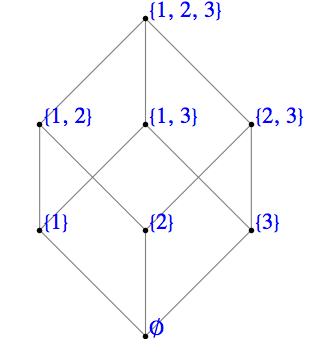

Ken Levasseur, Al Doerr, Michiel Smid, Oscar Levin, Charles M. Grinstead, J. Laurie Snell, Eric Lehman, F. Thomson Leighton, Albert R Meyer, Jeff Erickson, Kenneth P. Bogart, Carol Chritchlow, David Eck, OpenDSA Project, L.J. Miller
Let \(\preceq\) be a relation on a set \(L\text{.}\) We say that \(\preceq\) is a partial ordering on \(L\) if it is reflexive, antisymmetric, and transitive. That is:
\(\preceq\) is reflexive: \(a \preceq a \quad \forall a \in L\)
\(\preceq\) is antisymmetric: \(a \preceq b \textrm{ and } a \neq b
\Rightarrow b \npreceq a \quad \forall a,b \in L\)
\(\preceq\) is transitive: \(a \preceq b \textrm{ and } b \preceq c
\Rightarrow a \preceq c \quad \forall a,b,c \in L\)
The set together with the relation \((L, \preceq)\) is called a poset.
Example12.1.2.Some posets.
We recall a few examples of posets:
\((\mathbb{R}, \leq)\) is a poset. Notice that our generic symbol for the partial ordering, \(\preceq\text{,}\) is selected to remind us that a partial ordering is similar to “less than or equal to.”
Let \(A=\{a,b\}\text{.}\) Then \((\mathcal{P}(A) ,\subseteq)\) is a poset.
Let \(L = \{1, 2, 3, 6\}\text{.}\) Then \((L,\mid)\) is a poset.
The posets we will concentrate on in this chapter will be those which have upper and lower bounds in relation to any pair of elements. Next, we define this concept precisely.
Definition12.1.3.Lower Bound, Upper Bound.
Let \((L, \preceq)\) be a poset, and \(a, b \in L\text{.}\) Then \(c \in L\) is a lower bound of \(a\) and \(b\) if \(c \preceq a\) and \(c \preceq b\text{.}\) Also, \(d \in L\) is an upper bound of \(a\) and \(b\) if \(a \preceq d\) and \(b \preceq d\text{.}\)
In most of the posets that will interest us, every pair of elements have both upper and lower bounds, though there are posets for which this is not true.
Definition12.1.4.Greatest Lower Bound.
Let \((L, \preceq)\) be a poset. If \(a, b \in L\text{,}\) then \(\ell \in L\) is a greatest lower bound of \(a\) and \(b\) if and only if
\(\displaystyle \ell \preceq a\)
\(\displaystyle \ell \preceq b\)
If \(\ell' \in L\) such that \(\ell' \preceq a\) and \(\ell'
\preceq b\text{,}\) then \(\ell' \preceq \ell\text{.}\)
The last condition in the definition of Greatest Lower Bound says that if \(\ell'\) is also a lower bound, then \(\ell\) is “greater” in relation to \(\preceq\) than \(\ell'\text{.}\) The definition of a least upper bound is a mirror image of a greatest lower bound:
Definition12.1.5.Least Upper Bound.
Let \((L, \preceq)\) be a poset. If \(a, b \in L\text{,}\) then \(u \in L\) is a least upper bound of \(a\) and \(b\) if and only if
\(\displaystyle a \preceq u\)
\(\displaystyle b \preceq u\)
If \(u' \in L\) such that if \(a \preceq u'\) and \(b \preceq u'\text{,}\) then \(u \preceq u'\text{.}\)
Notice that the two definitions above refer to “...a greatest lower bound” and “a least upper bound.” Any time you define an object like these you need to have an open mind as to whether more than one such object can exist. In fact, we now can prove that there can’t be two greatest lower bounds or two least upper bounds.
Theorem12.1.6.Uniqueness of Least Upper and Greatest Lower Bounds.
Let \((L, \preceq)\) be a poset, and \(a, b \in L\text{.}\) If a greatest lower bound of \(a\) and \(b\) exists, then it is unique. The same is true of a least upper bound, if it exists.
Proof.
Let \(\ell\) and \(\ell'\) be greatest lower bounds of \(a\) and \(b\text{.}\) We will prove that \(\ell=\ell'\text{.}\)
\(\ell\) a greatest lower bound of \(a\) and \(b\)\(\Rightarrow\)\(\ell\) is a lower bound of \(a\) and \(b\text{.}\)
\(\ell'\) a greatest lower bound of \(a\) and \(b\) and \(\ell\) a lower bound of \(a\) and \(b\)\(\Rightarrow
\ell \preceq \ell'\text{,}\) by the definition of greatest lower bound.
\(\ell'\) a greatest lower bound of \(a\) and \(b\)\(\Rightarrow
\ell'\) is a lower bound of \(a\) and \(b\text{.}\)
\(\ell\) a greatest lower bound of \(a\) and \(b\) and \(\ell'\) a lower bound of \(a\) and \(b\text{.}\)\(\Rightarrow \ell' \preceq \ell\) by the definition of greatest lower bound.
\(\ell\preceq \ell'\) and \(\ell'\preceq \ell \Rightarrow \ell=\ell'\) by the antisymmetry property of a partial ordering.
The proof of the second statement in the theorem is almost identical to the first and is left to the reader.
Definition12.1.7.Greatest Element, Least Element.
Let \((L, \preceq)\) be a poset. \(M \in L\) is called the greatest (maximum) element of \(L\) if, for all \(a \in L\text{,}\)\(a \preceq M\text{.}\) In addition, \(m
\in L\) is called the least (minimum) element of \(L\) if for all \(a \in L\) , \(m \preceq a\text{.}\) The greatest and least elements, when they exist, are frequently denoted by \(\pmb{1}\) and \(\pmb{0}\) respectively.
Example12.1.8.Bounds on the divisors of 105.
Consider the partial ordering “divides” on \(L = \{1, 3, 5, 7, 15, 21, 35, 105\}\text{.}\) Then \((L, \mid)\) is a poset. To determine the least upper bound of 3 and 7, we look for all \(u \in L\text{,}\) such that \(3|u\) and \(7|u\text{.}\) Certainly, both \(u = 21\) and \(u = 105\) satisfy these conditions and no other element of \(L\) does. Next, since \(21|105\text{,}\)\(21\) is the least upper bound of 3 and 7. Similarly, the least upper bound of 3 and 5 is 15. The greatest element of \(L\) is 105 since \(a|105\) for all \(a \in L\text{.}\) To find the greatest lower bound of 15 and 35, we first consider all elements \(g\) of \(L\) such that \(g \mid 15\text{.}\) They are 1, 3, 5, and 15. The elements for which \(g \mid 35\) are 1, 5, 7, and 35. From these two lists, we see that \(\ell = 5\) and \(\ell = 1\) satisfy the required conditions. But since \(1|5\text{,}\) the greatest lower bound is 5. The least element of \(L\) is 1 since \(1|a\) for all \(a \in L\text{.}\)
Definition12.1.9.The Set of Divisors of an Integer.
For any positive integer \(n\text{,}\) the divisors of \(n\) is the set of integers that divide evenly into \(n\text{.}\) We denote this set \(D_n\text{.}\)
For example, the set \(L\) of Example 12.1.8 is \(D_{105}\text{.}\)
Example12.1.10.The power set of a three element set.
Consider the poset \((\mathcal{P}(A),\subseteq)\text{,}\) where \(A = \{1, 2, 3\}\text{.}\) The greatest lower bound of \(\{1, 2\}\) and \(\{1,3\}\) is \(\ell = \{1\}\text{.}\) For any other element \(\ell'\) which is a subset of \(\{a,
b\}\) and \(\{a, c\}\) (there is only one; what is it?), \(\ell' \subseteq
\ell\text{.}\) The least element of \(\mathcal{P}(A)\) is \(\emptyset\) and the greatest element is \(A=\{a, b, c\}\text{.}\) The Hasse diagram of this poset is shown in Figure 12.1.11.

Power Set of \(\{1, 2, 3\}\)
Figure12.1.11.Power Set of \(\{1, 2, 3\}\)
The previous examples and definitions indicate that the least upper bound and greatest lower bound are defined in terms of the partial ordering of the given poset. It is not yet clear whether all posets have the property such every pair of elements always has both a least upper bound and greatest lower bound. Indeed, this is not the case (see Exercise 12.1.3).
ExercisesExercises
1.
Consider the poset \((D_{30},\mid)\text{,}\) where \(D_{30} = \{1,2, 3, 5, 6, 10,
15, 30\}\text{.}\)
Find all lower bounds of 10 and 15.
Find the greatest lower bound of 10 and 15.
Find all upper bounds of 10 and 15.
Determine the least upper bound of 10 and 15.
Draw the Hasse diagram for \(D_{30}\) with respect to \(\div\text{.}\) Compare this Hasse diagram with that of Example 12.1.10. Note that the two diagrams are structurally the same.
Answer.
1, 5
5
30
30
See the Sage cell below with the default input displaying a Hasse diagram for \(D_{12}\text{.}\)
2.
List the elements of the sets \(D_8\text{,}\)\(D_{50}\text{,}\) and \(D_{1001}\text{.}\) For each set, draw the Hasse diagram for “divides.”
Determine the least upper bound and greatest lower bound of all pairs of elements when they exist. Indicate those pairs that do not have a least upper bound (or a greatest lower bound ).
Find the least and greatest elements when they exist.
\(a_1\) is the least element and \(a_5\) is the greatest element.
Partial solution for Hasse diagram (f):
\(\textrm{ lub}\left(a_2, a_3\right)\) and \(\textrm{
lub}\left( a_4,a_5\right)\) do not exist.
No greatest element exists, but \(a_1\) is the least element.
4.
For the poset \((\mathbb{N},\leq )\text{,}\) what are the greatest lower bound and least upper bound of two elements \(a\) and \(b\text{?}\) Are there least and/or greatest elements?
5.
Prove the second part of Theorem 12.1.6, the least upper bound of two elements in a poset is unique, it one exists.
Prove that if a poset \(L\) has a least element, then that element is unique.
Answer.
If \(0\) and \(0'\) are distinct least elements, then
\begin{equation*}
\left.
\begin{array}{cc}
0\leq 0' & \textrm{ since } 0 \textrm{ is a least element} \\
0'\leq 0 & \textrm{ since } 0' \textrm{ is a least element} \\
\end{array}
\right\}\Rightarrow 0=0' \textrm{ by antisymmetry, a contradiction}
\end{equation*}
6.
We naturally order the numbers in \(A_m = \{1, 2, . . . , m\}\) with “less than or equal to,” which is a partial ordering. We define an ordering, \(\preceq\) on the elements of \(A_m \times A_n\) by
\begin{equation*}
(a, b) \preceq (a',
b') \Leftrightarrow a \leq a' \textrm{ and } b \leq b'
\end{equation*}
Prove that \(\preceq\) is a partial ordering on \(A_m \times A_n\) .
Draw the ordering diagrams for \(\preceq\) on \(A_2 \times A_2\) , \(A_2\times A_3\text{,}\) and \(A_3 \times A_3\text{.}\)
In general, how does one determine the least upper bound and greatest lower bound of two elements of \(A_m \times A_n\text{,}\)\((a, b)\) and \((a',b')\text{?}\)
Are there least and/or greatest elements in \(A_m \times A_n\text{?}\)